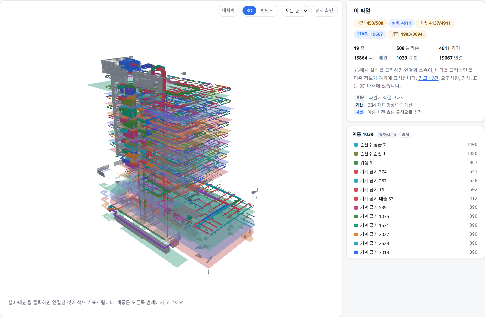
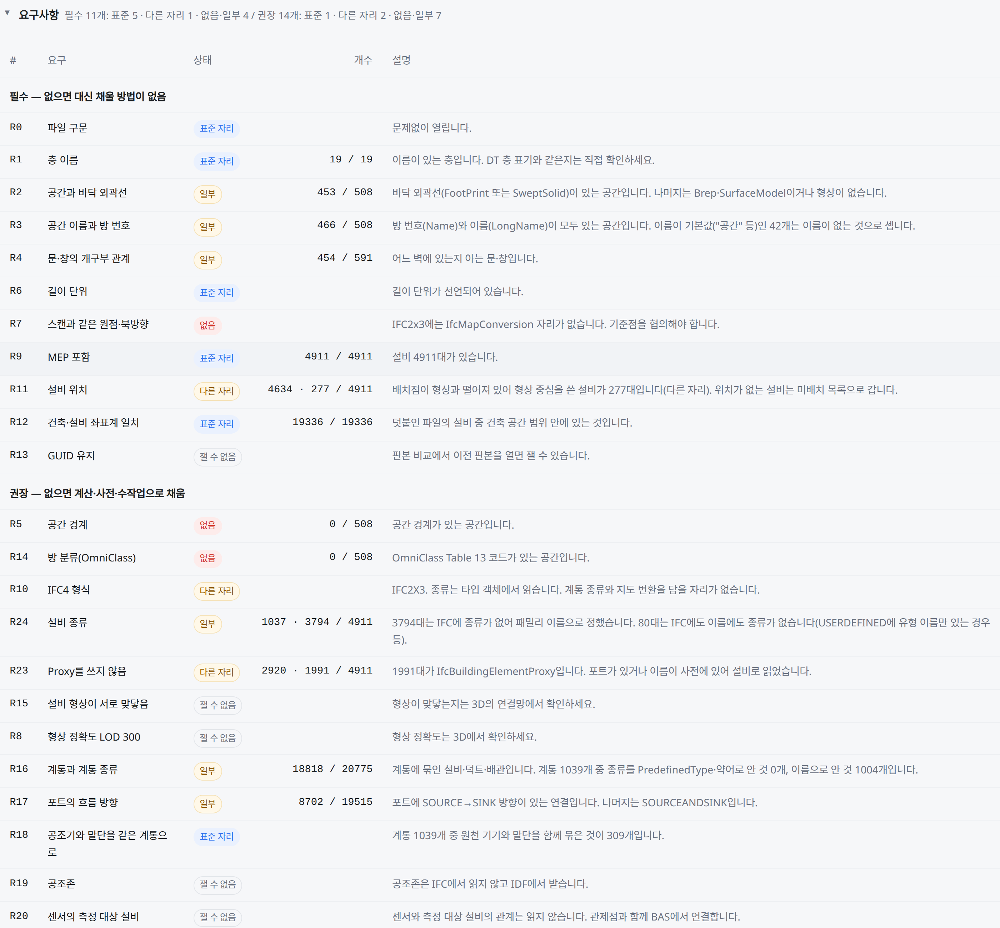

① 구축·운영에 필요한 기능 · ② 구현 성과와 남은 과제 · ③ 일정과 의사결정
docs/prd/ 티켓 251건 · 사내 GitHub 이슈·PR · git 이력(main 94a3239)
성수 BIM으로 DT 데이터의 기본 구조를 자동 생성했습니다. 저장·변경 반영·층간 편집도 구현했으며, 남은 과제는 요구사항 재검토와 주요 의사결정입니다. IDF 자동 구축은 R2로 분리했습니다.
부분 2 · 미착수 0
(IDF 공조존은 R2 · 저장·검토·변경 반영은 요구사항 재검토 중)
관리표상 완료 111 + 진행·검토 5 · 개발 대기 58
기획 중 47 · R2 30 (코드 반영 기준 171건 · 68%)
설비가 있는 공간 판정(등급 2). 기준 85%
19층 · 물리존 508 · 기기 4,911
248건이 1회 이상 · 티켓당 평균 6.1회
(10/2~10/13, 요구사항·수용 기준 문구)
별도 웹 편집 도구에서 건물 모델을 읽고 공간·설비·연결 정보를 정리합니다. 결과는 디지털 트윈(DT)이 읽을 수 있는 파일로 전달합니다.
Zone 4,016 · 실내기 3,028)에는 좌표가 하나도 없다. 이 도구가 그 빠진 절반(공간·좌표)을 만들고, 리모델링 때 3D·공간 계층·설비 소속·관제 화면이 서로 어긋나지 않게 한 번에 고친다.
구축 담당자는 수작업을 줄이고, 현장 관리자는 변경 내용을 직접 수정합니다. 정리된 데이터는 관제·AI·로봇에 활용하고, 고객사에는 BIM 보완 항목을 안내합니다.
BIM·수동으로 사이트의 첫 온톨로지(방·공조존·설비·배관)를 만들어 DT 에 등록 (IDF 자동 구축은 R2)
리모델링·벽 변경·설비 재배치를 직접 편집하고, 반영 전에 미리보기로 영향을 확인
요구사항 R0~R26 · IDS 파일로 스스로 검사한 BIM 을 제출하고, 등급·재제출 항목 리포트를 받음
변경 사실을 알림받고 최신 레이아웃으로 전환. 이상 알림이 어느 방에서 났는지 봄
"3층 회의실의 실내기" 처럼 공간·커스텀존으로 설비를 질의
문·창·벽의 통과 가능/불가 정보로 이동 경로 판단
| 전 | 후 |
|---|---|
| BIM 을 받아도 쓸 수 있는지 모름 | 등급 칩으로 즉시 판정 |
| "BIM 다시 주세요" 만 반복 | 항목별 재제출 리포트 (값 문제 vs 내보내기 설정 문제) |
| 공간·설비 수작업 입력 | 성수 기기 4,911대 자동 배치·소속 |
| 리모델링 반영이 구축 조직 의존 | 고객사가 직접 편집·반영 |
왼쪽 5개는 데이터를 처음 만드는 기능, 오른쪽 5개는 운영 중 바뀐 내용을 고치는 기능입니다. 괄호 안 숫자는 세부 개발 항목 수입니다.
IFC 를 읽어 층·방·벽·문·설비·계통 생성, 건축+설비 파일 합치기, 판본 비교
R0~R26 보고서, 고객사용 IDS 검사 파일, 등급 0~5 칩, 문제 항목을 CSV·BCF로 전달
R1: 공조존 수동 생성·경계 수정·검증 · R2: IDF 로 공조존·담당 설비 자동 구축
BIM 없는 사이트 — 배경 위에 방·설비를 그림
공간·관계 데이터와 3D(GLB·OBJ·FBX) 내보내기, DT 호환·결과 보고
물리존·룸·벽·문·창·커스텀존 생성·분할·병합, 내력벽 잠금, 겹침 차단
설비 이동·추가·삭제, 설치면(바닥/벽/천장) 판정, 옮기면 소속 방 자동 재판정
연결 잇기·끊기, 흐름 방향, 계통 이름 규칙
권한·층 잠금·임시 저장·미리보기·반영·버전·되돌리기·편집 이력
층을 넘는 샤프트·계단, 외벽 에디터, 로봇 통과 속성
자동 생성은 등급 0~3을 모두 통과한 BIM만 허용하는 안입니다. 설비 연결까지 필수이며, 흐름 방향(등급 4)은 보완 목표입니다. 수용 기준 승인(D1)은 10/8 재검토를 시작했습니다.
| 등급 | 온톨로지에 더해지는 것 | DT 에서 되는 것 | BIM 에 필요한 것 |
|---|---|---|---|
| 0 | 층 · 방 외곽선 · 벽·문·창 | 3D 지도 · 층·방 목록 | 건축 BIM, 길이 단위, 원점 (R0~R4·R6·R7) |
| 0+ | 방 종류, 문으로 이어진 방-방 | "회의실" 검색 · 로봇 경로 | 방 분류 코드 · 공간 경계 (R14·R5 권장) |
| 1 | 설비와 좌표 | 3D 에 설비 표시 | 설비(MEP) BIM (R9·R11) |
| 2 | 설비가 어느 방에 있는지 (계산) | 이상 알림의 발생 위치 · 층·방별 설비 목록 | 건축·설비가 같은 좌표·층 이름 (R12·R1) |
| 3 ★ | 같은 계통·배관에 이어진 설비 | 계통별 보기 | 계통 정보, 맞닿게 그린 설비 (R16·R15, 10/8 필수로 승격) → 생성 허용 |
| 4·4+ | 공조기 → 토출구 흐름 방향, 담당 공간 | 담당 설비 추적 · 상류/하류 · 계통도 담당 공간 | 포트 흐름 방향 (R17) 또는 사람이 확정한 규칙 방향 (확정 방향 ≥ 50% 가 목표선) |
| 5 | 공조존 · 관제점 | 계통도 완성 · 실시간 값 | BIM 밖 — IDF · BAS |
생성 허용 기준 = 누적 등급 0~3: 외곽선 ≥ 85%·층 이름 100% · 배치점 ≥ 90% · 소속 ≥ 85% · 계통 소속 ≥ 60% (이전 보고 초안은 70%). 성수(BIM 만) 89 · 100 · 87.9 · 60% — 계통 소속이 기준선과 맞닿은 경계값이라 같은 산식으로 재측정이 필요(PRD 1.8)
251개 세부 항목 중 완료 111건·진행 및 검토 5건으로 관리표상 구현은 46%입니다. 코드 반영 기준은 171건·68%이며, 관리 상태 갱신과 요구사항 재검토가 남아 있습니다.
| 상태 | 건수 | 비율 | 뜻 | |
|---|---|---|---|---|
| 완료 | 111 | 44% | 검토 후 코드 반영 완료 | |
| 진행·검토 중 | 5 | 2% | 개발 중 2 · 검토 중 3 (검토용 화면에서 확인 대기) | |
| 개발 대기 | 58 | 23% | R1 기획 확정 · 이 중 28건은 코드 반영 완료(다중층 11 등) | |
| 기획 중 | 47 | 19% | R1, 요구사항 재검토 중 (저장·변경 반영·DT 동기화·이력 32) | |
| R2 | 30 | 12% | R2 로 분리 (IDF 자동 구축 15 · 존↔방 매칭 · 로봇 시점 뷰 …) |
R2로 분리한 30건은 후속 개발 범위입니다. IDF 자동 구축 전체를 10/8에 이관했고, 관리표에는 기획 진행 상태로 표시합니다.
| 대표 기능 | 티켓 상태 (막대 길이 = 티켓 수) | 관리표 · 코드 반영 | |
|---|---|---|---|
| ● | 1. BIM 임포트·검토 화면 | 131101 | 56% · 코드 68% |
| ● | 2. BIM 요구사항·등급 판정 | 52 | 71% · 코드 86% |
| ◐ | 3. 공조 구역 설정 · IDF 파일 입력 | 4117 | 23% · 코드 23% |
| ● | 4. 수동 구축 | 411 | 83% · 코드 83% |
| ● | 5. 온톨로지 생성·DT 연동 | 9591 | 38% · 코드 46% |
| ● | 6. 공간 편집 | 303 | 91% · 코드 91% |
| ● | 7. 설비 배치·소속 공간 재판정 | 2012 | 91% · 코드 91% |
| ● | 8. 배관·설비 연결 편집 | 10152 | 61% · 코드 83% |
| ◐ | 9. 저장·검토·변경 반영 | 42324 | 10% · 코드 67% |
| ● | 10. 다중층·외벽·로봇 | 71812 | 25% · 코드 64% |
● 동작 = 핵심 흐름이 구현·시험됨 · ◐ 부분 = 일부만 · ○ 미착수. 구현율 = (칸반 완료+진행·검토) ÷ 티켓 수, 코드 = PR 이 merge 된 티켓까지 센 비율. ◐ 3 은 R1 범위(공조존 수동 도구)만 돌고 IDF 자동 구축은 R2 · ◐ 9 는 코드가 들어갔지만 PRD 화면 흐름을 재검토 중이라 카드가 기획 중(32건 중 22건에 코드). 기능 5 는 핵심 내보내기가 돌지만 리포트·DT 연동 보강 티켓이 남아 비율이 낮게 나옴. 기능 10 은 다중층 카드가 아직 Todo 라 보드로는 25% 지만 코드는 64%. 이번 갱신에서 화면을 직접 열어 보지는 않았다(티켓·PR·시험 기준 판단).
22개 기능 묶음의 진행 상태입니다. 막대는 세부 항목 수(최대 25), 오른쪽은 구현 항목(완료+진행·검토) / 전체와 요구사항 수정 횟수입니다. 코드 반영 여부와 관리 상태는 다를 수 있습니다.
구현 116 / 251 · 요구 수정 1,535회. E18 다중층은 관리 상태가 개발 대기로 남아 1/19 로 보이지만 코드 반영은 12건 완료. 수정이 많은 곳(E05 BIM 172 · E18 다중층 133 · E13 배관 127 · E14 저장·검토·변경 반영 121 · E12 설비 116)은 실제 BIM 을 열어 본 결과와 화면 흐름 재검토가 요구사항으로 되돌아간 곳 — 개발과 기획이 같이 움직인 흔적. E14·E15·E19 의 기획 중 32건은 코드가 먼저 들어간 뒤 7회차에서 재검토 중


빈 곳은 파일 작성 습관에서 옴 — 외곽선 없는 방 55 · 기본 이름 "공간" 42 · 어느 벽인지 없는 문·창 137 · 방을 안 그린 공용부의 기기 571. "설비가 있는 방" 84% 는 외벽 루버 포함, 빼면 87.9%(등급 2 지표). 10/6 측정값이고 방 종류만 10/12 사전 보강(영문 방 이름 4개)으로 31 → 33%.
| 항목 | 값 | 무엇과 |
|---|---|---|
| 설비가 있는 방 (계산) | 95.8% · 97.4% 성수 94.5% | BIM 에 적힌 방 — Duplex 167 · 병원 2,216 · 성수 976/1,033 |
| 연결 추정 (형상) | 정밀 79.5% 재현 75.8% | 포트가 완전한 ifc4Mep 1,974건 |
| 규칙 방향 (사전) | 83.8 · 88.9 · 99.35% | 포트에 적힌 방향 (성수 · ifc4Mep · 병원) |
실측 BIM 기준값(가진 BIM 5종) 아래로 떨어지면 실패. 요구사항 문서와 기능표·개발 항목의 일치 여부도 검사(prd.test.ts). 이번 집계에서는 기능 단위 시험만 실행했습니다. 화면·실측 시험은 성수 파일이 없어 등록 수를 집계했습니다. 요구 기준 96개는 부분 검증 상태입니다.
요구가 바뀌면 추가 보완 작업이 자동 등록됩니다. 후속 62건 중
→ 62건 중 57건이 이미 완료, 열린 5건(BIM 4·임포트 결과 1)은 개발 검토 중 2 · 기획 결정 대기 2 · 나머지 1
| 사유 | 건 | 예 |
|---|---|---|
| 기획 결정 대기 (needs-pm) | 6 | 진입 경로(ML-01), 로봇 통과 속성(EQP-17), 수용 기준선(BIM-21), 배관 오브젝트(OBJ-12) |
| 일부만 구현 · 기획 밖 대기 | 2 | 로봇 통과 속성(needs-dev) · 로봇 데이터 선행 제공(ROB-04, blocked) |
| 요구사항 재검토 중 (D-INT 포함) | 32 | 저장·변경 반영 21 · DT 동기화 6 · 편집 이력 5 — 코드는 대부분 들어감, 7회차 화면 흐름 기준으로 다시 확정 |
| 개발 대기 (R1) | 58 | 다중층 18 · 화면 11 · BIM 10 · 생성 5 · 배관 5 (이 중 28건은 코드 반영 완료) |
열림: D1·D5·D9·D11·D-INT · Q1·Q2·Q3·Q15
10/8 이후 해소: D12·D14·D-gbXML
PRD 가 코드와 같은 저장소에 있고 티켓 1개 = 파일 1개 = 이슈 1개. 요구 문구가 바뀌면 스크립트가 이슈 본문을 고치고 변경 이력을 남긴다.
요구사항·수용 기준 문구 기준 — 10-02 30 · 10-06 490(전체 상세화) · 10-07 115 · 10-08 67 · 10-09 243 · 10-10 235 · 10-12 94 · 10-13 261. 10-09·10 은 사용자 시나리오 추가·재작성, 10-13 은 수용 기준 번호(AC) 부여 같은 형식 손질이 큼. 티켓 251건 중 248건이 1회 이상, 가장 많이 고친 것은 편집 파일(HIST-03) 12회
리뷰·결정(09-15 · 09-18 · 09-30)이 당일~수일 안에 새 판으로 반영. 10-08 에는 생성 허용 등급 0~3 안(D1 재검토)과 IDF R2 분리가 같은 날 PRD 에 들어감
9/22~9/29 BIM으로 가능한 자동화 범위를 구현·실측으로 먼저 확인
10/1~10/2 요구사항 문서·개발 작업·진행 관리표를 연결하고, 작업별 검토 방식으로 전환
10/6~10/13 사용자 요구를 구체화하는 동안 검토 후 코드 반영 213건 — 10/12 하루에만 94개(기존 검토 요청을 일괄 반영)
남은 R1 110건을 10/31까지 마무리하는 일정안입니다. 11/2~13에는 성수 데이터로 생성부터 DT 등록까지 통합 검증하고, R2는 11/14부터 2027년 1월까지 진행합니다.
현재 진척과 남은 병목 — 10/1 작업 관리 전환 후 12일간 완료+진행·검토 116건(기존 시범 구현 포함). 코드 반영 기준으로는 171건. R1 잔여 110건(개발 대기 58 · 기획 중 47 · 진행·검토 5)의 병목은 개발 속도보다 기획 재검토 47건과 D-INT
10/31 마감을 지키기 위한 조건 — 코드가 먼저 들어간 저장·변경 반영·DT 동기화·이력 32건을 7회차 요구사항에 맞게 재검토하는 일을 W43까지 끝내야 하며, DT 교환 방식이 파일에서 바뀌면 W44 일정에 영향이 있습니다. 기획 확정과 D-INT 결정이 W42~W43 안에 필요
R1은 구축·편집·DT 파일 연동을 마련합니다. R2는 IDF 자동 구축 등 30건과 공통 사용성 개선을 진행하며, R1 통합 검증 결과에 따라 추가 보강 항목(+α)을 확정합니다.
| 대표 기능 | R1 (2026.10) — 여기까지 만든다 | R2 (~2027.1) — 이걸 보강한다 |
|---|---|---|
| 1. BIM 임포트·검토 | IFC 임포트, 건축+설비 합치기, 판본 비교, 검토 화면 | gbXML 임포트 · IDF·gbXML 경로의 검토 화면 IDF-15 · BIM-15 |
| 2. 요구사항·등급 | R0~R26 보고서, IDS 검사 파일, 등급 0~5·게이트(0~3) | 고객사 BIM 추가 확보 후 기준선 재측정·보고서 문구 보강 +α |
| 3. 공조존 · IDF | 공조존 도구로 수동 생성·경계 수정·검증 | IDF 로 공조존·담당 설비 자동 구축 — 존↔공간 대응 관계 확인, 재임포트, 플랜트 계통 E04 15 · ZON-03/07 |
| 4. 수동 구축 | 평면도 이미지 배경, 방·설비·공조존 수동 작성 | BIM·IDF 없는 사이트를 3D 스캔 모델 배경으로 수동 구축 MAN-01 |
| 5. 온톨로지·DT 연동 | GeoJSON+TTL·3D 내보내기, 생성·결과 리포트 (① 파일 교환) | D-INT 가 API·공유 DB 로 정해지면 연동 방식 확장 +α |
| 6. 공간 편집 | 물리존·룸·벽·문·창 생성·분할·병합, 내력벽 잠금, 겹침 차단 | 스냅 등 정밀 조작 — 아래 공통 개선 항목 UI-06 |
| 7. 설비 배치·소속 재판정 | 이동·추가·삭제, 설치면 판정, 소속 방 자동 재판정 | 공조 커버리지 분석 — 부하 변화 추정·공백·불균형 경고·최적안 제안 P3-05~07 |
| 8. 배관·계통 | 잇기·끊기, 흐름 방향, 계통 이름 규칙 | 규칙 방향의 알려진 오류 보정 · 환수·급탕 원천 규칙 PIP-16/17 |
| 9. 저장·검토·변경 반영 | 임시 저장·미리보기·반영·버전·되돌리기·이력 | 공통 권한 체계(PRD_009) 연동 · 층 단위 편집 잠금·해제 COM-01·05~07 · WF-05 · XPRD-04 |
| 10. 다중층·외벽·로봇 | 샤프트·계단, 외벽 에디터, 로봇 통과 속성 | 로봇 1인칭 시점 뷰 · 표시 규격 ROB-01/02 |
등급 0~3을 모두 통과한 BIM만 자동 구축을 허용하는 안의 승인을 요청드립니다(계통 소속 기기 ≥ 60%). 흐름 방향은 등급 4의 보완 목표입니다(확정 방향 ≥ 50%, 미달 시 경고). 판정은 BIM 원본+계산만으로 하고, 사전 보정은 별도 표시합니다(D12, 성수 계통 종류 97%). 성수의 계통 소속은 60%로 경계값입니다. R15·R16 필수화와 고객사 제출 요구(R0~R26)·보고서 문구가 이 결정에 달려 있습니다.
파일 전달·서버 API·공유 DB 중 DT 데이터 교환 방식을 결정해 주십시오. 현재는 파일 전달을 전제로 저장·잠금·반영·버전·변경 알림을 구현했습니다. API나 공유 DB로 바뀌면 서버 신설이 필요하며, 저장·동기화·이력 관련 32건의 요구사항 재검토와 일정에 영향을 줍니다.
남은 R1 110건의 개발을 10/31에 마치고, 11/2~11/13에 통합 검증하는 일정안의 승인을 요청드립니다. R2는 11/14~2027년 1월에 IDF 자동 구축 포함 30건과 추가 보강(+α)을 진행합니다. R1의 공조 구역은 수동 생성으로 제공하며, 추가 보강은 편집 사용성·화면 개선·R1 검증 결과를 반영합니다.
성수 외 고객사의 BIM도 확보해 주십시오. 현재 BIM 5종으로 정확도 하한선을 확인하고 있습니다. 특정 파일에만 잘 맞는 결과를 피하려면, 작성 도구와 판본이 다른 실제 데이터로 검증을 넓혀야 합니다.